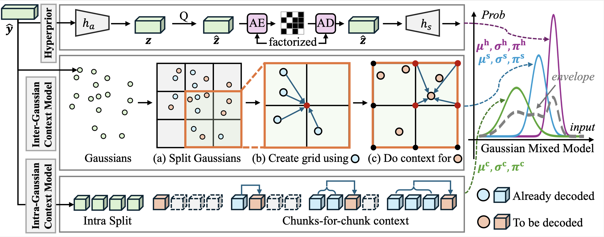

Abstract
Although various compression techniques have been proposed, previous art suffers from a common limitation: for any existing 3DGS, per-scene optimization is needed to achieve compression, making the compression sluggish and slow.
We propose Fast Compression of 3D Gaussian Splatting (FCGS), an optimization-free model that can compress existing 3DGS representations rapidly in a single feed-forward pass, which significantly reduces compression time from minutes to seconds.
To enhance compression efficiency, we propose a multi-path entropy module that assigns Gaussian attributes to different entropy constraint paths for balance between size and fidelity. We also carefully design both inter- and intra-Gaussian context models to remove redundancies among the unstructured Gaussian blobs.
Overall, FCGS achieves a compression ratio of over 20X while maintaining fidelity, surpassing most SOTA per-scene optimization-based methods.
Main Method
Overview of our FCGS method. We customize both Multi-path Entropy Module (MEM) and various context models for the special structure of 3DGS to achieve excellent compression performance. Please refer to the paper for more technique details.
Main Performance
Despite unable to do per-scene optimization, we still achieve superior compression performance. FCGS can directly:
(1) compress 3DGS from optimization; (2) compress 3DGS from generation models; (3) boost pruning-based approaches.

(1) compress 3DGS from optimization, e.g., the vanilla 3DGS.
(2) compress 3DGS from generation models, e.g., MVSplat and LGM.
(3) boost pruning-based approaches, e.g., Mini-Splatting and Trimming-the-Fat.
BibTeX
@article{fcgs2024,
title={Fast Feedforward 3D Gaussian Splatting Compression},
author={Chen, Yihang and Wu, Qianyi and Li, Mengyao and Lin, Weiyao and Harandi, Mehrtash and Cai, Jianfei},
journal={arXiv preprint},
year={2024}
}